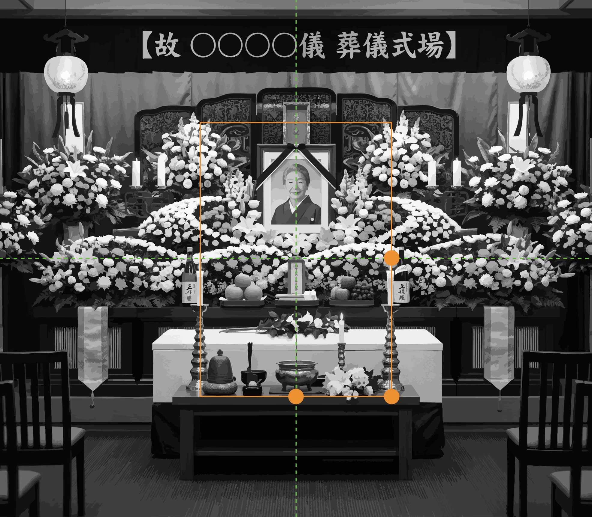
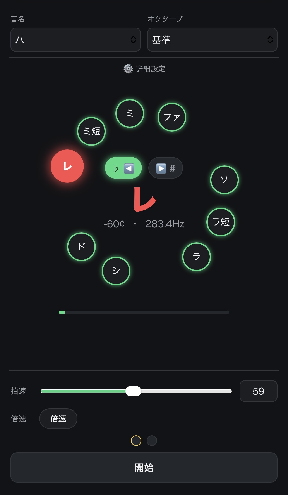

祭壇の中心から位牌が数センチずれるだけで、儀式全体の空気が変わってしまう—— そんな違和感を、僧侶として長年感じてきました。
葬儀社の方にも、僧侶にも、気軽に使っていただけるよう無料で配布しています。 形を整えることは、心を調えること。方便堂は、そのための小さな道具をお届けします。

方便堂 僧侶の「あったらいいな」を、かたちに。
HOUBENDOU / 方便堂
儀式の現場に立つ中で感じてきた、小さな違和感。 それをそのままにせず、道具にして手渡す。 方便堂は、僧侶がひとつずつかたちにしてきた「あったらいいな」を届けています。
現場から生まれた、ふたつの道具です。
祭壇の中心から位牌が数センチずれるだけで、儀式全体の空気が変わってしまう—— そんな違和感を、僧侶として長年感じてきました。
葬儀社の方にも、僧侶にも、気軽に使っていただけるよう無料で配布しています。 形を整えることは、心を調えること。方便堂は、そのための小さな道具をお届けします。

御詠歌を美しく唱えたい。でも、正しい音程が出ているのか自分ではわからない、転調が苦手—— そんな声にお応えして作った、ボイストレーニングアプリです。
音を捉えることや転調が苦手な方、相対音感トレーニングをしたい方におすすめです。

「方便」とは、目的地にたどり着くための、巧みな手立てのこと。 方便堂は、僧侶として現場に立つ中で感じてきた「あったらいいな」を、ひとつずつ道具にして届けるお店です。
派手な仕組みは目指していません。祭壇の前で、稽古の合間で、そっと役に立つこと。 それだけを大切にしています。これからも、現場から生まれる小さな工夫を、少しずつ増やしていく予定です。